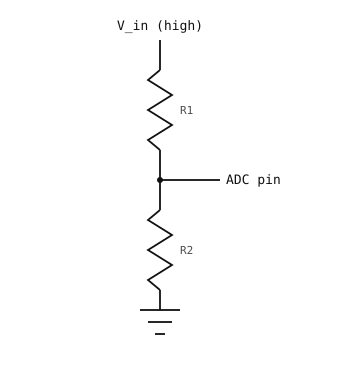

3.12. Đọc tín hiệu analog bằng ADC¶
Cho đến nay, camera đã đọc các tín hiệu số -- một chân (pin) có giá trị 0 hoặc 1, một công tắc mở hoặc đóng. Hầu hết các tín hiệu đến từ cảm biến thực tế đều là analog: một điện áp liên tục thay đổi mượt mà trong một khoảng nào đó. Một điện trở quang quét qua mọi điện áp giữa hai cực nguồn khi độ sáng môi trường thay đổi. Đầu ra của cảm biến nhiệt độ trôi vài mili-volt khi nhiệt độ phòng tăng lên. Đầu ra của micrô lên xuống theo âm thanh xung quanh.
Bộ chuyển đổi tương tự-số (ADC) là cầu nối. Nó lấy mẫu điện áp trên một chân (pin) và trả về một số nguyên mà Python có thể đọc như bất kỳ giá trị nào khác.
3.12.1. Lượng tử hóa¶
Một giá trị số không thể biểu diễn chính xác một điện áp liên tục. Nhiệm vụ của ADC là lượng tử hóa -- làm tròn mỗi mẫu đến mức gần nhất trong một tập hợp cố định các mức. Một ADC N bit có 2^N mức; bộ chuyển đổi 12-bit có 4096 mức trải đều trên dải đầu vào của nó.

Lượng tử hóa: mỗi mẫu của tín hiệu analog (liền) được làm tròn đến một trong số hữu hạn các mức số (đường đứt nét dạng bậc thang).¶
Điện áp giữa hai mức liền kề là kích thước bước của ADC; bất kỳ thứ gì nhỏ hơn mức đó sẽ biến mất trong quá trình làm tròn. Một ADC 12-bit trên dải 3,3 V có kích thước bước khoảng 3.3 / 4096 ≈ 0.8 mV -- đủ nhỏ để hầu hết các tín hiệu trông liên tục trong phần mềm.
3.12.2. Lớp machine.ADC¶
machine.ADC bọc một kênh đầu vào analog. Khởi tạo nó với chân (pin) bạn muốn đọc, sau đó gọi read_u16():
from machine import ADC
adc = ADC("P6")
value = adc.read_u16()
print(value)
read_u16() luôn trả về một số nguyên không dấu 16 bit trong khoảng 0 đến 65535. Độ phân giải ADC gốc tùy thuộc vào board (12-bit trên STM32, tùy cổng ở nơi khác); kết quả được căn trái thành 16 bit để chi tiết phần cứng không lộ ra Python -- giá trị 65535 là toàn thang đo bất kể chip nào.
Điện áp tham chiếu -- đầu vào tương ứng với toàn thang đo -- phụ thuộc vào board. Xem Bo mạch OpenMV để biết giá trị trên camera của bạn. Bất kỳ điện áp nào vượt quá điện áp tham chiếu sẽ đọc là toàn thang đo (và có thể làm hỏng chân nếu vượt quá điện áp đầu vào tuyệt đối tối đa).
3.12.2.1. Chuyển đổi số đếm sang điện áp¶
Ánh xạ từ số đếm sang điện áp là tuyến tính, với số đếm toàn thang đo ánh xạ chính xác sang Vref:
voltage = counts × Vref / 65535
Trong code:
VREF = 3.3 # cam-dependent; see the quickref
counts = adc.read_u16()
voltage = counts * VREF / 65535
print(voltage, "V")
3.12.3. Bộ chia điện áp¶
Hai điện trở mắc nối tiếp giữa ray điện áp và đất tạo thành một bộ chia điện áp. Nút giữa chúng nằm ở điện áp được thiết lập bởi tỉ số của hai điện trở:

Bộ chia điện áp: R1 và R2 mắc nối tiếp giảm Vin xuống còn V_out.¶
V_out = Vin × R2 / (R1 + R2)
Điện trở bằng nhau cho nửa điện áp ray; R2 nhỏ hơn nhiều so với R1 đặt điểm chia gần đất; R2 lớn hơn nhiều đặt nó gần ray.
Công thức giả định không có gì khác lấy dòng đáng kể từ V_out. Một chân ADC có trở kháng cao (megaohm, nano-ampe) và dễ dàng đáp ứng điều đó, vì vậy một bộ chia cấp cho ADC hoạt động đúng như công thức dự đoán.
3.12.4. Biến trở¶
Một biến trở là một linh kiện vật lý đơn lẻ hoạt động chính xác như một bộ chia điện áp, với một con trượt di chuyển điểm chia giữa hai đầu. Xoay núm thay đổi R1 và R2 cùng nhau trong khi giữ nguyên tổng của chúng (tổng điện trở của biến trở).

Biến trở nối như một nguồn điện áp thủ công cho ADC: 3,3 V ở một đầu, đất ở đầu kia, con trượt đến chân (pin).¶
Biến trở là thiết bị đầu vào chuẩn để thử nghiệm ADC. Nối một đầu vào 3.3 V, đầu kia vào đất, và con trượt vào một chân có khả năng ADC; xoay núm quét con trượt qua mọi điện áp giữa hai cực nguồn.
import time
from machine import ADC
pot = ADC("P6")
VREF = 3.3
while True:
counts = pot.read_u16()
voltage = counts * VREF / 65535
print(voltage, "V")
time.sleep_ms(100)
3.12.5. Đọc điện áp cao hơn bằng bộ chia¶
Điện áp vượt quá Vref sẽ ghim ADC ở toàn thang đo và có thể làm hỏng đầu vào nếu vượt quá mức điện áp tuyệt đối tối đa. Để đọc nguồn cao hơn -- pin, đầu ra cảm biến vượt quá Vref -- giảm nó xuống bằng bộ chia điện áp cố định trước khi đến chân (pin):

Giảm nguồn điện áp cao để phù hợp ADC: R1 và R2 tạo thành bộ chia điện áp cố định có điểm chia cấp cho chân ADC.¶
Chọn R1 và R2 sao cho điện áp chia luôn nằm trong dải của ADC ở điện áp đầu vào cao nhất bạn mong đợi:
V_adc = V_in × R2 / (R1 + R2)
Với V_in = 12 V tối đa và điện áp tham chiếu 3,3 V, tỉ số R2 / (R1 + R2) phải nhiều nhất là 3.3 / 12 ≈ 0.275. Một lựa chọn phổ biến với một ít dự phòng là R1 = 33 kΩ, R2 = 10 kΩ. Tỉ số là 10 / 43 ≈ 0.233, vì vậy V_adc đỉnh ở khoảng 12 × 0.233 ≈ 2.79 V -- an toàn dưới Vref.
Để khôi phục V_in ban đầu từ một lần đọc ADC, đảo ngược công thức bộ chia:
V_in = V_adc × (R1 + R2) / R2
Trong code:
from machine import ADC
R1 = 33_000
R2 = 10_000
VREF = 3.3
adc = ADC("P6")
counts = adc.read_u16()
v_adc = counts * VREF / 65535
v_in = v_adc * (R1 + R2) / R2
print(v_in, "V")
Một vài lưu ý thực tế:
Bộ chia lấy
V_in / (R1 + R2)liên tục. VớiR1 + R2 = 43 kΩvàV_in = 12 V, đó là khoảng 280 µA -- thường không đáng kể, nhưng nếu nguồn chạy bằng pin hãy cân nhắc điện trở lớn hơn (100 kΩ đến 1 MΩ) để giảm dòng tiêu thụ khi chờ.Dung sai điện trở (thường ±1% hoặc ±5%) ảnh hưởng trực tiếp đến độ chính xác đo lường. Hai điện trở ±5% có thể gây sai số trường hợp xấu nhất khoảng ±10% cho
V_inphục hồi.Trở kháng nguồn của bộ chia kết hợp với bất kỳ tụ ký sinh nào để lọc thông thấp đầu vào. Đối với tín hiệu thay đổi nhanh điều đó quan trọng; đối với kiểm tra điện áp pin thì không.